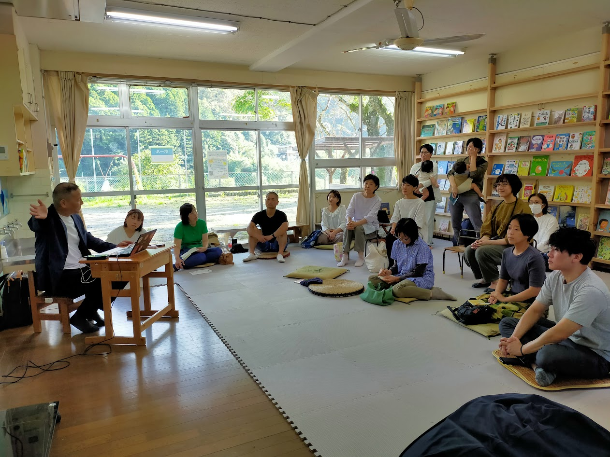
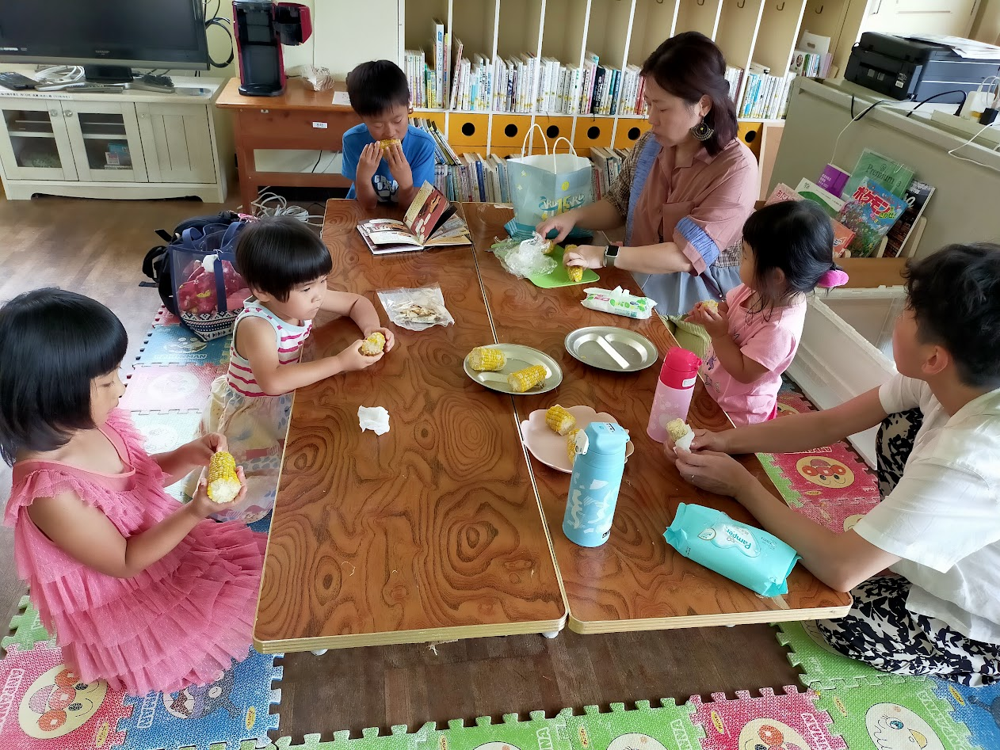
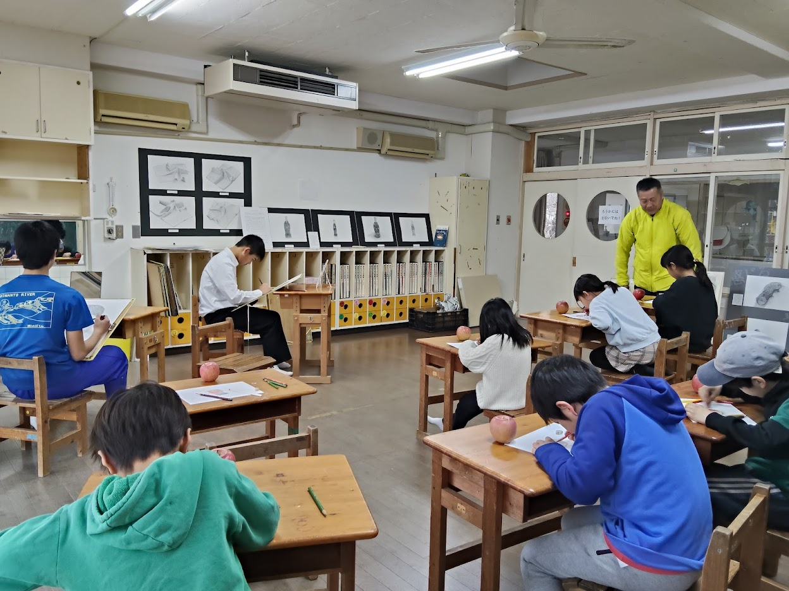
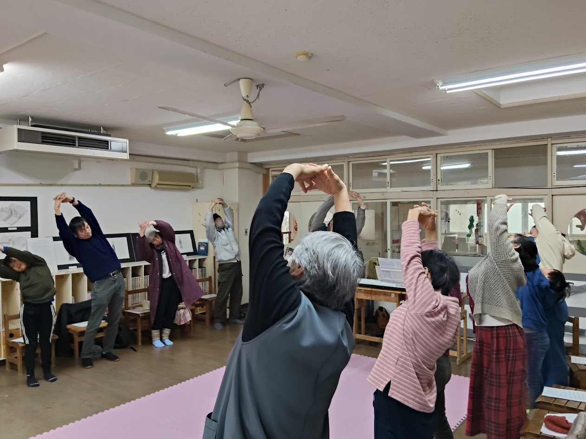
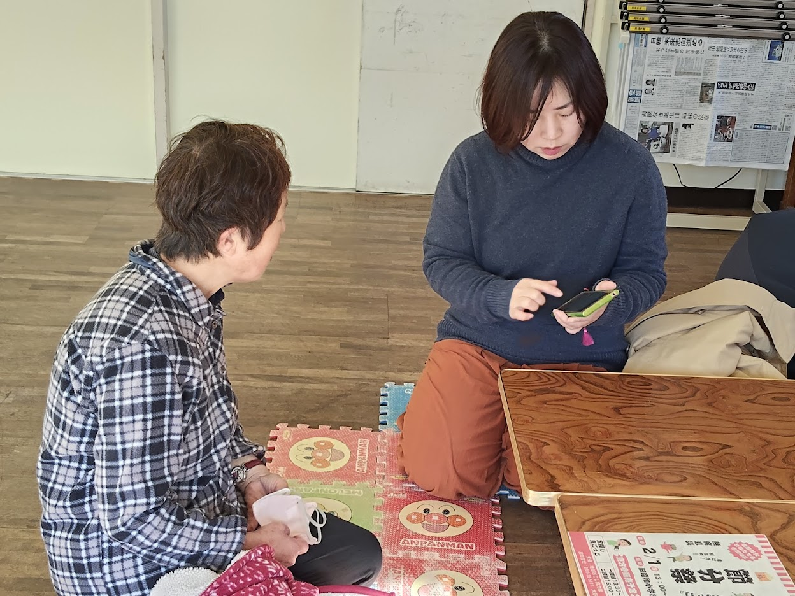

Background
CUEキュー。について
地域の課題
- 図書館・書店・遊具のある公園がない
- 情報・体験の格差がある
- 子どもたちを始め住民が気軽に集える場所がない
- 悪天候時に安心して過ごせる場所がない
- 廃園となった空き施設周辺から寂しくなった、防犯上も心配、再活用の声があった
そこでこれらの声を元に、
「あったらいいな」を実現しました。

TOWA-SHIMANTO
育つ会とおわ
About Us
ビジョン
「遊び・学び・育ち合い」、誰もが楽しく、自分らしく。暮らしに主体的にコミットする、豊かな地域文化を次世代にしっかりと繋いでいきます。
ミッション
図書・公園・多目的機能を備えた「開かれた場」を整えることで、多世代が安心して集える居場所が創出され、結果として対話や共感が自然に生まれ、温かなコミュニケーションを育むことに寄与します。
Background
Identity
英語で「きっかけ」「手がかり」という意味。
図書や公園、コミュニティによって、何かを始めるきっかけや、
新しいモノを生み出す手がかりを得られる場所になってほしいという
思いをこめて付けられました。
Services
01
.jpg)
Library
カリコレサービス(クラウド型の図書の貸出サービス)を活用し、町立・県立図書館と連携して常時700冊の図書を月1回の入替を行い提供。合わせて寄付本1500冊も貸出しています。
02

Park
園庭とトイレを365日開放。地域の子どもたちの遊び場として、遠足の休憩所としても活用されています。
03

Multi-purpose
Wi-Fi完備。学習・コワーキング・会議・イベントなど、ちょっとしたおしゃべりまで自由に使えます。
04

Community
図書・公園・多目的機能を通じて、さまざまなコミュニケーションが生まれています。
2025 UPDATE
週5日オープンへ
火〜土曜日 10:00〜18:00。より多くの方に利用していただけるよう、開館日が増えました。
蔵書数が大幅増
300冊 → 700冊 ＋ 寄付本1,500冊。より充実したラインナップでお待ちしています。
新聞・雑誌コーナー新設
新聞5紙、雑誌15誌が閲覧可能に。情報の格差をなくす取り組みです。
専門的サポート開始
レファレンス（調査相談）サービスを導入。知りたいことを一緒に探します。
Voices
ここがなかったら、子育てどうなっていたかな？と思うことがよくあります。
40代 女性
みんなで集まって勉強できる場所が他にない
中学生
疲れている時に行ってもよくて、長時間いてもいいところ
30代 女性
Activities

図書や公園の利用をきっかけに自然発生した、みんなの美術部。「描きたい」「作りたい」という思いを形にする、多世代が自由に表現を楽しむクリエイティブな活動の場となっています。

絵本の読み聞かせや季節の工作、地域資源を活用した学びの場など、本や場所を起点とした多様なイベントを定期的に開催。新たな出会いや交流を育んでいます。

スマートフォンなどデジタル機器の使い方が分からない方への個別サポート相談会。わからないことを気軽に聞ける環境が、世代を超えた温かなコミュニケーションを生んでいます。
Visit Us
施設名
CUE（旧小鳩保育所）
住所
〒786-0504
高知県高岡郡四万十町十川238-4
開館時間
火曜日 〜 土曜日 ／ 日・月・祝日 休館
Follow Us